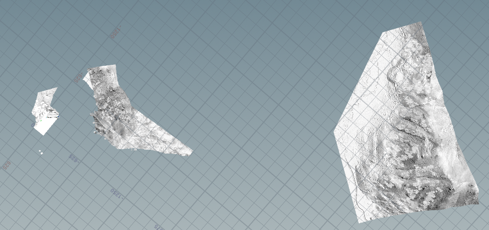
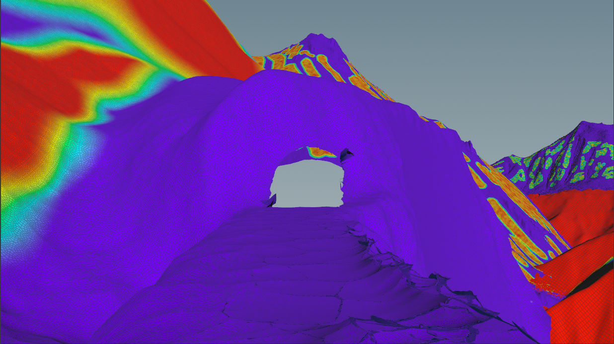
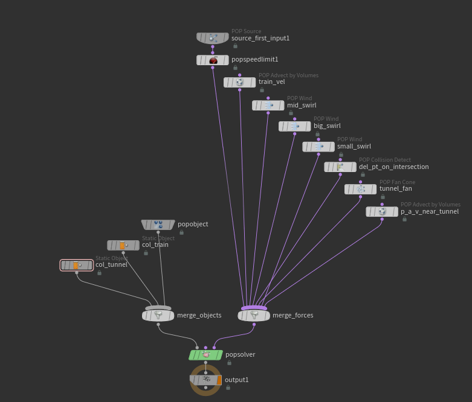
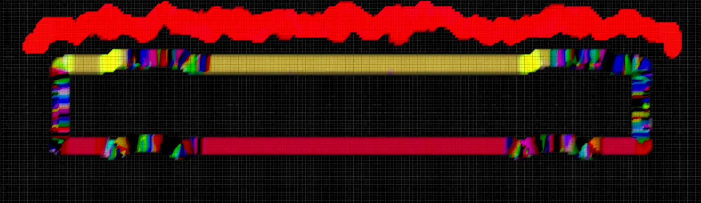
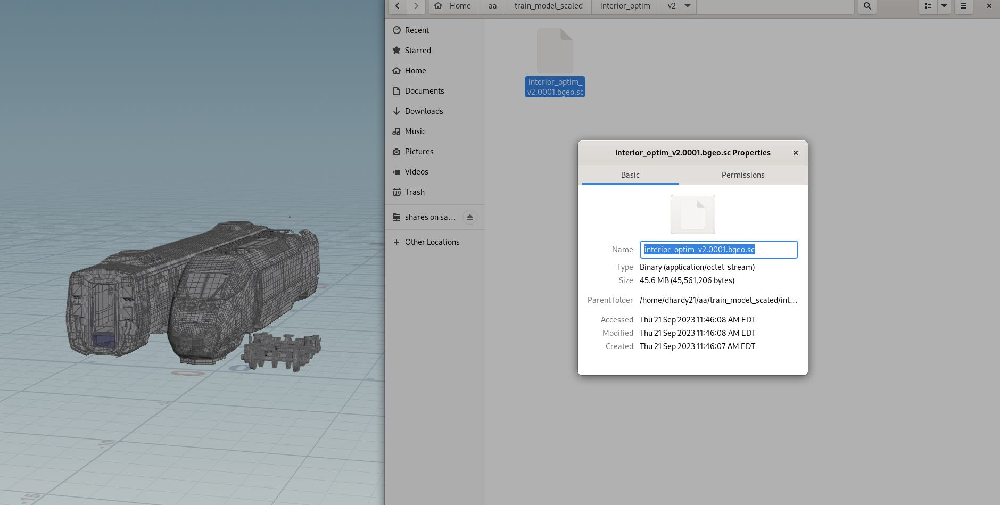

Time Flies - SCAD Animation Studios
Throughout the course of a year, I helped to guide a team of 70 artists to create a 4-minute animated short under the animation department's "SCAD Animation Studios" program. Building upon Noah Catan's toolset Pantheon and lessons learned from working on .
Environment

My main responsibility during this project was to create a snowy shot that showcased the environments a traveller may experience while traveling with Amtrak. Our team brainstormed possible winter locations and eventually selected Donner Pass in Truckee, California as our reference.
To ensure our environment looked similar to Donner Pass, I downloaded Digital Elevation Model (DEM) data from the surrounding areas. This data allowed for the recreation of mountains near the area. Throughout review sessions, I dressed mountains in the scene to aid our composition. Check out opentopography.org to download these datasets, especially if you have an educational email address.
Do add trees to the environment, I painted a mask in Houdini to ensure that our group could respond to notes from our mentors.
Snow FX
To emphasize the snowy environment, we decided to add snowflakes and snow kick up to the shot.
While creating the flurries, I wanted to know more about why different types of snow form. I found this article from the National Snow and Ice Data Center that provided me with a lot of information. In addition, I found several tutorials that went over creating snow in Houdini (Kate Xagoraris & Tyler Bay).
When ready to create the effect, I found reference to match my simulation to (below).
I simulated the snowflakes using the following setup with a couple different frequencies of POP wind.
In addition to the POP wind forces, I also created a velocity field around the train to mimic Bernoulli's principle (with some extra disturbance around the train car as well).
Here's a static test I did with this velocity field to test it out:
Lastly, I simulated some the volumetric snow kick up with Axiom, a GPU based solver in Houdini.
Optimization
Near the beginning of the project, we were having issues working with the train model we purchased. I started the process by removing any details that would not be visible from camera. Later, I removed duplicate pieces and instanced them to save memory. Additionally, we switched from using the pre-subdivided model to an un-subdivided model that we applies render-time subdivision to. After all the optimization was done, we were left with and asset that occupied 42 mb of storage on disk instead of 2.4 gb of storage on disk.